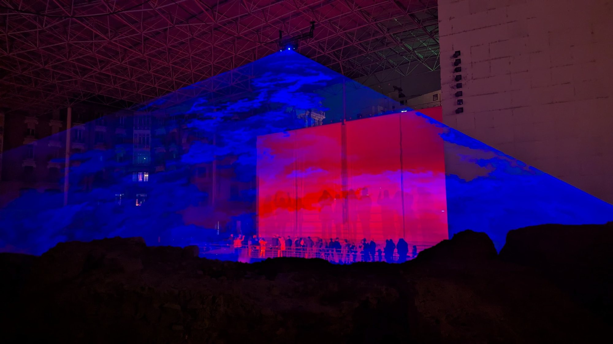
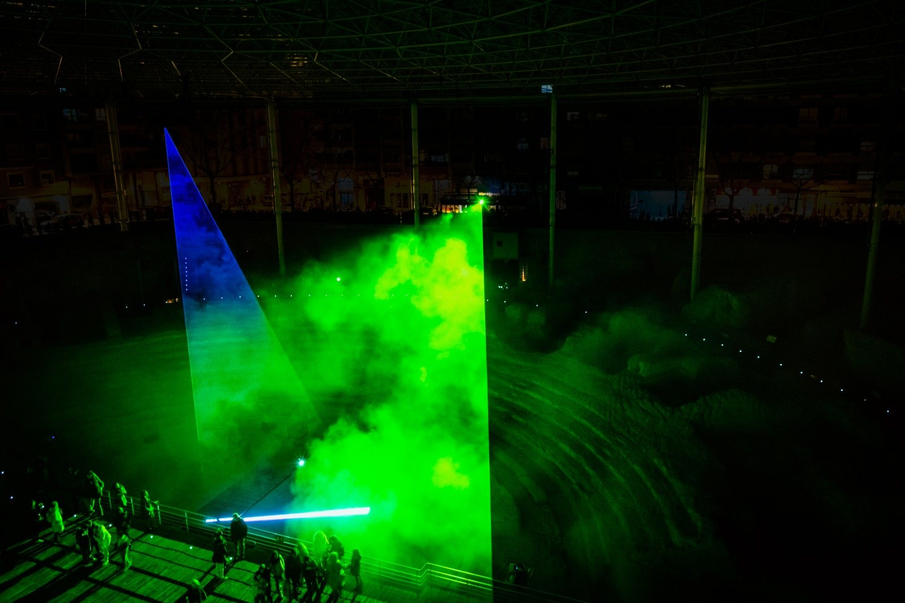
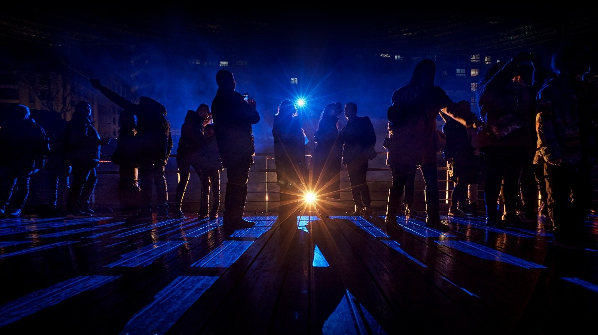
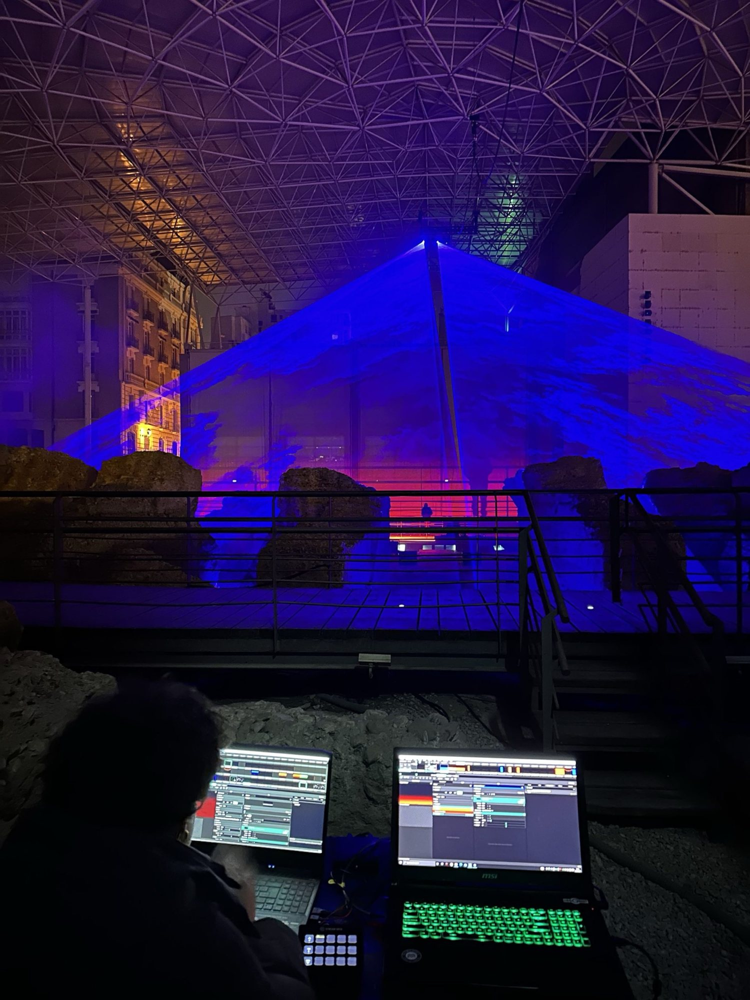

4. Fiat Lux by Antoni Arola
Public installation by Antoni Arola inside Zaragoza Luce Light Festival“The Catalan artist's proposal is titled "Fiat Lux" and has a strong poetic charge. Arola used lasers, smoke, and interactive elements to create this installation in which the boundary between the tangible and the illusion blurs, enveloping the viewer in its journey and making them the protagonist, as they move forward, changing their surroundings.
Light and space become a sensorial language with a piece tailored to the space and dimensions of Zaragoza's Roman Theater, a format never seen in any other city.
The work of Arola, one of the most prominent artists in the field of light, responds to his eternal search for beauty, drawing inspiration from ancient cultures, digital codes, and chance.“



As an Intern in Arola’s studio, I had the pleasure of taking part in the adaptation of the artist’s famous installation “Fiat Lux” for the first edition of the Zaragoza’s light festival “Zaragoza Luce”.
My role in this project was to experiment with projector and laser programming with a model and prepare both contents and files for the final videomapping. I also got to create some of the animations using After Effects.

Project by Antoni Arola
Internship at Antoni Arola Studio, 2025